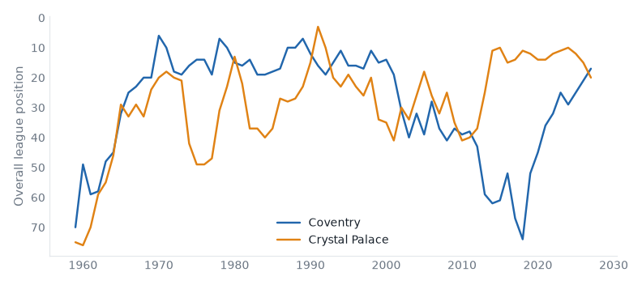
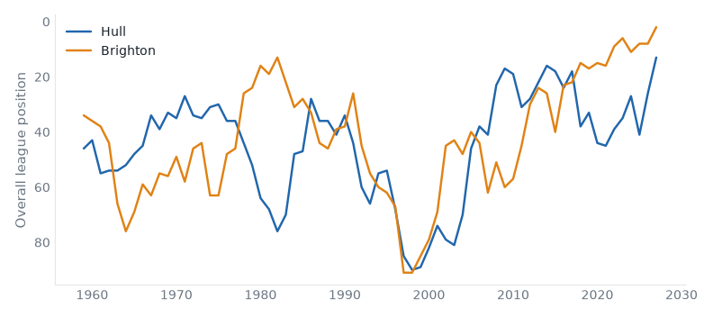
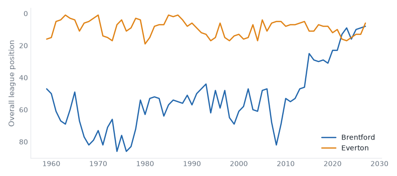
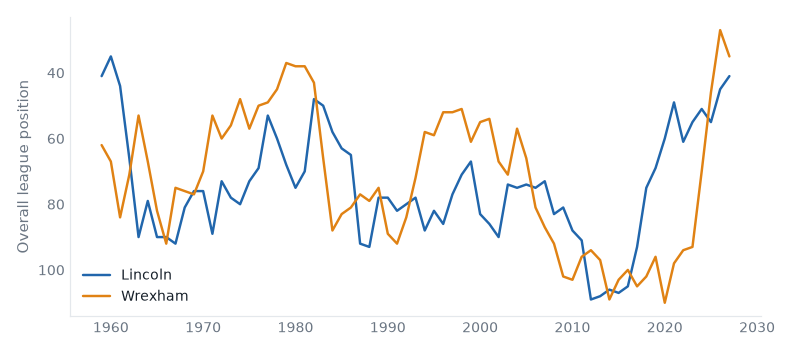
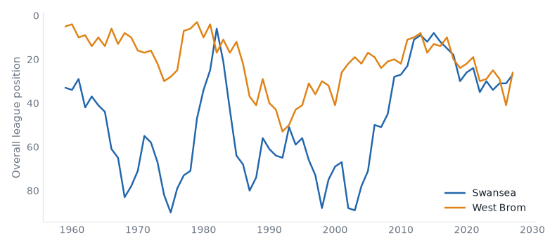
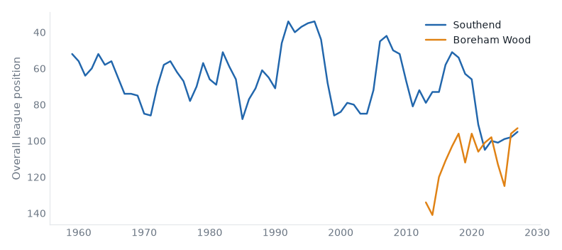

58 fixtures across 5 divisions, week of 20 November 2026.
Coventry host Crystal Palace in the Premier League on Saturday 21 November. Coventry City live between the Premier League and the Championship; they sit 17th with 9 points from 10 games, form LWLLW. Crystal Palace live between the Premier League and the Championship; they are 14 seasons into a spell 1 division above that; they sit 20th with 7 points from 10 games, form LLLLW. They have met 58 times in league play since 1958/59: Coventry City 24 wins, Crystal Palace 14, 20 drawn.

|
|
Hull host Brighton in the Premier League on Sunday 22 November. Hull City live between the Championship and League One; this season is their highest since 2017; they sit 13th with 11 points from 10 games, form LDDLD. Brighton & Hove Albion are, on the balance of their record, a Championship club; they are 10 seasons into a spell 1 division above that; they sit 2nd with 22 points from 10 games, form WWLWW. They have met 46 times in league play since 1959/60: Hull City 13 wins, Brighton & Hove Albion 20, 13 drawn.

|
|
Brentford host Everton in the Premier League on Monday 23 November. Brentford live between League One and League Two; they are 6 seasons into a spell 2 divisions above that; they sit 8th with 14 points from 10 games, form LWDLD. Everton have never played outside the Premier League; they sit 6th with 16 points from 10 games, form WWLLD. They have met 10 times in league play since 2021/22: Brentford 3 wins, Everton 3, 4 drawn.

|
|
Bournemouth v Nott'm Forest
Sat 21 Nov · 2 above level compare
Bournemouth 7th (WWWWL), Nottingham Forest 16th (WLDLL). At least one of them sits above where their record says they belong.
Tottenham v Ipswich
Sat 21 Nov · above level compare
Tottenham Hotspur 11th (LWWWD), Ipswich Town 14th (LDDLW). At least one of them sits above where their record says they belong.
| Sat 21 | Aston Villa v Sunderland | above level | compare |
| Sat 21 | Chelsea v Leeds | yo-yo club | compare |
| Sat 21 | Man City v Fulham | above level | compare |
| Sat 21 | Newcastle v Arsenal | champions last season | compare |
| Sun 22 | Liverpool v Man United | compare |
Lincoln host Wrexham in the Championship on Saturday 21 November. Lincoln City live between League One and League Two; this season is their highest since 1961; they sit 21st with 15 points from 15 games, form LLLWD. Wrexham are, on the balance of their record, a League Two club; they are 2 divisions above that this season; they sit 15th with 18 points from 15 games, form DWLLW. They have met 54 times in league play since 1964/65: Lincoln City 15 wins, Wrexham 22, 17 drawn.

|
|
Swansea host West Brom in the Championship on Saturday 21 November. Swansea City are, on the balance of their record, a League One club; they are 9 seasons into a spell 1 division above that; they sit 7th with 26 points from 15 games, form LLWLL. West Bromwich Albion live between the Premier League and the Championship; they are 1 division below that now; they sit 6th with 28 points from 15 games, form WDWDW. They have met 38 times in league play since 1981/82: Swansea City 18 wins, West Bromwich Albion 13, 7 drawn.

|
|
Stoke v Birmingham
Sat 21 Nov · top-three clash compare
Stoke City 3rd (WWWDW), Birmingham City 1st (WWWLW). Both in the top three.
| Sat 21 | Bolton v Portsmouth | yo-yo club | compare |
| Sat 21 | Middlesbrough v Bristol City | yo-yo club | compare |
| Sat 21 | Millwall v QPR | yo-yo club | compare |
| Sat 21 | Norwich v Cardiff | neighbours | compare |
| Sat 21 | Sheffield United v Watford | yo-yo club | compare |
| Sat 21 | Southampton v Derby | below level | compare |
| Sat 21 | West Ham v Preston | below level | compare |
| Sat 21 | Wolves v Charlton | yo-yo club | compare |
| Sun 22 | Burnley v Blackburn | yo-yo club | compare |
Cambridge v Stockport
Sat 21 Nov · above level compare
Cambridge United 10th (LDLDW), Stockport County 2nd (WWLDW). At least one of them sits above where their record says they belong.
Huddersfield v Leicester
Sat 21 Nov · fallen giant compare
Huddersfield Town 1st (DWWWW), Leicester City 11th (DWLWW). Huddersfield Town have played in the top flight.
Mansfield v Milton Keynes Dons
Sat 21 Nov · above level compare
Mansfield Town 12th (DLWWD), MK Dons 9th (WWWWL). At least one of them sits above where their record says they belong.
Notts County v Stevenage
Sat 21 Nov · fallen giant compare
Notts County 18th (WDWLL), Stevenage 16th (DLWLW). Notts County have played in the top flight.
| Fri 20 | Barnsley v Sheffield Weds | fallen giant | compare |
| Sat 21 | Blackpool v Wigan | fallen giant | compare |
| Sat 21 | Bradford v Doncaster | fallen giant | compare |
| Sat 21 | Burton v Luton | fallen giant | compare |
| Sat 21 | Leyton Orient v AFC Wimbledon | fallen giant | compare |
| Sat 21 | Oxford v Wycombe | fallen giant | compare |
| Sat 21 | Plymouth v Peterboro | yo-yo club | compare |
| Sat 21 | Reading v Bromley | fallen giant | compare |
Chesterfield v Shrewsbury
Sat 21 Nov · below level compare
Chesterfield 7th (WLWDL), Shrewsbury Town 10th (WLDWW). At least one of them sits below where their record says they belong.
| Sat 21 | Accrington v Salford | compare | |
| Sat 21 | Barnet v Port Vale | below level | compare |
| Sat 21 | Cheltenham v Bristol Rvs | below level | compare |
| Sat 21 | Crawley Town v Fleetwood Town | below level | compare |
| Sat 21 | Gillingham v Crewe | below level | compare |
| Sat 21 | Grimsby v Rotherham | below level | compare |
| Sat 21 | Newport County v Swindon | fallen giant | compare |
| Sat 21 | Northampton v Rochdale | fallen giant | compare |
| Sat 21 | Oldham v Exeter | fallen giant | compare |
| Sat 21 | Tranmere v Colchester | below level | compare |
| Sat 21 | York v Walsall | below level | compare |
Southend host Boreham Wood in the National League on Friday 20 November. Southend United live between League One and League Two; they are 2 divisions below that now; they sit 3rd with 32 points from 17 games, form WLDDW. Boreham Wood belong in the National League — 73% of their 15 recorded seasons; they sit 1st with 45 points from 17 games, form DWWWW. They have met 8 times in league play since 2021/22: Southend United 2 wins, Boreham Wood 4, 2 drawn.

|
|
| Sat 21 | Aldershot v Scunthorpe | below level | compare |
| Sat 21 | Barrow v Carlisle | fallen giant | compare |
| Sat 21 | Gateshead v Hartlepool | below level | compare |
| Sat 21 | Halifax v Woking | below level | compare |
| Sat 21 | Kidderminster v Fylde | above level | compare |
| Sat 21 | Solihull v Altrincham | compare | |
| Sat 21 | Sutton v Boston Utd | above level | compare |
| Sat 21 | Tamworth v Eastleigh | neighbours | compare |
| Sat 21 | Wealdstone v Hornchurch | 2 above level | compare |
| Sat 21 | Worthing v Harrogate | 2 above level | compare |
| Sat 21 | Yeovil v Forest Green | compare |
Reviewed on Monday review, tiers 1–2 and Tuesday review, tiers 3–5.
Built from the English football database, tiers 1–5 from 1958/59. Results from football-data.co.uk. Archived copy.